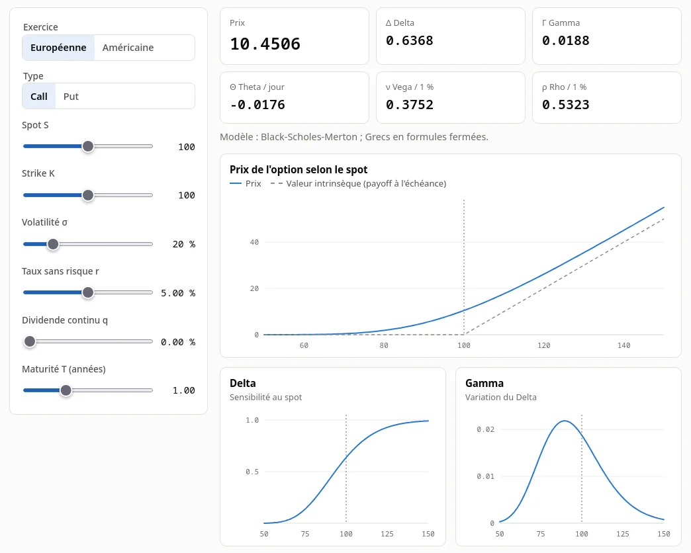

C# · .NET 8 · WPF · 2025
Option Pricer
Une application de bureau qui price des options européennes, américaines et asiatiques et calcule leurs Grecs : Black-Scholes, arbre binomial et Monte-Carlo.
En écrivant les tests unitaires, j'ai trouvé et corrigé deux bugs de calcul. J'ai aussi porté le moteur en JavaScript : la démo tourne directement dans le navigateur.